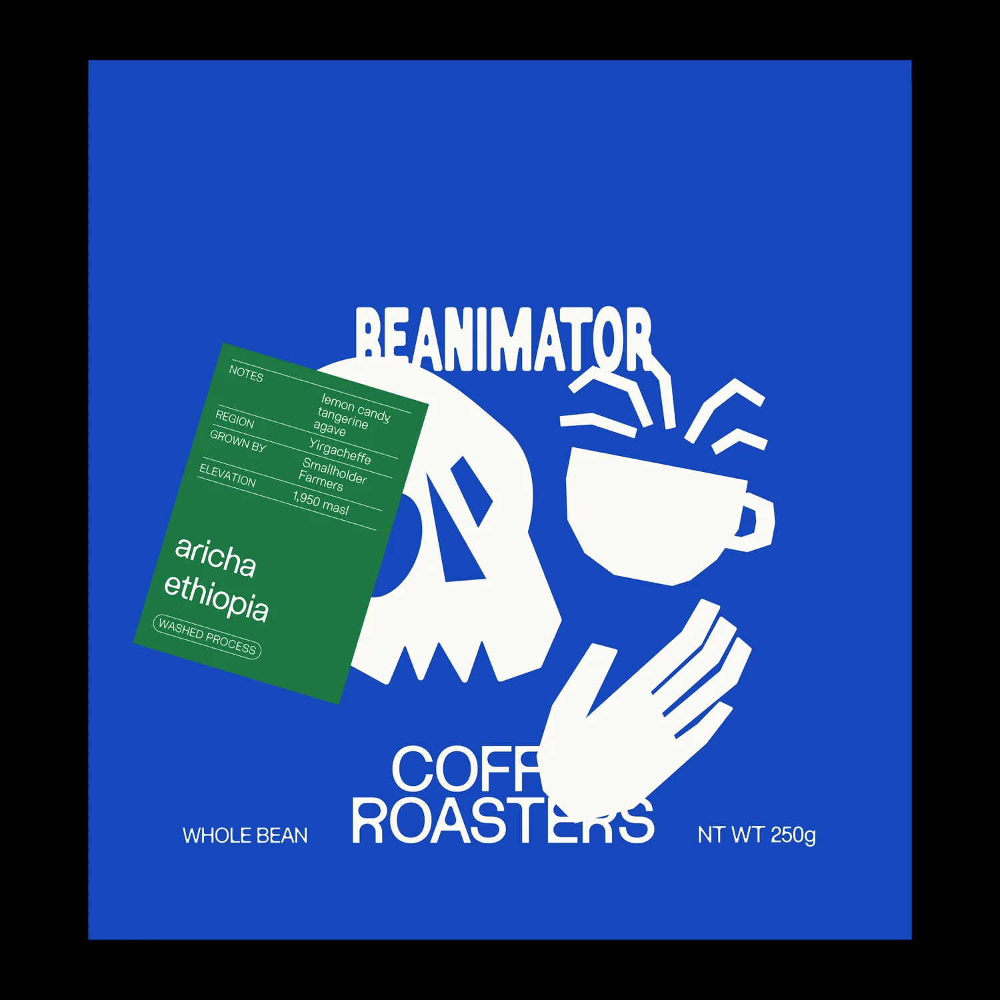
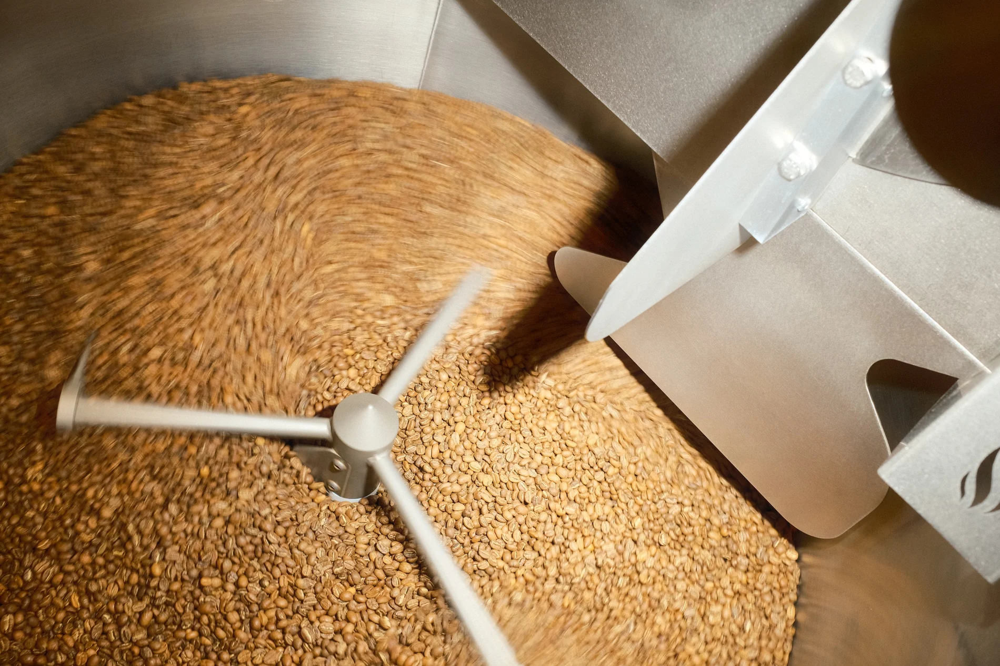
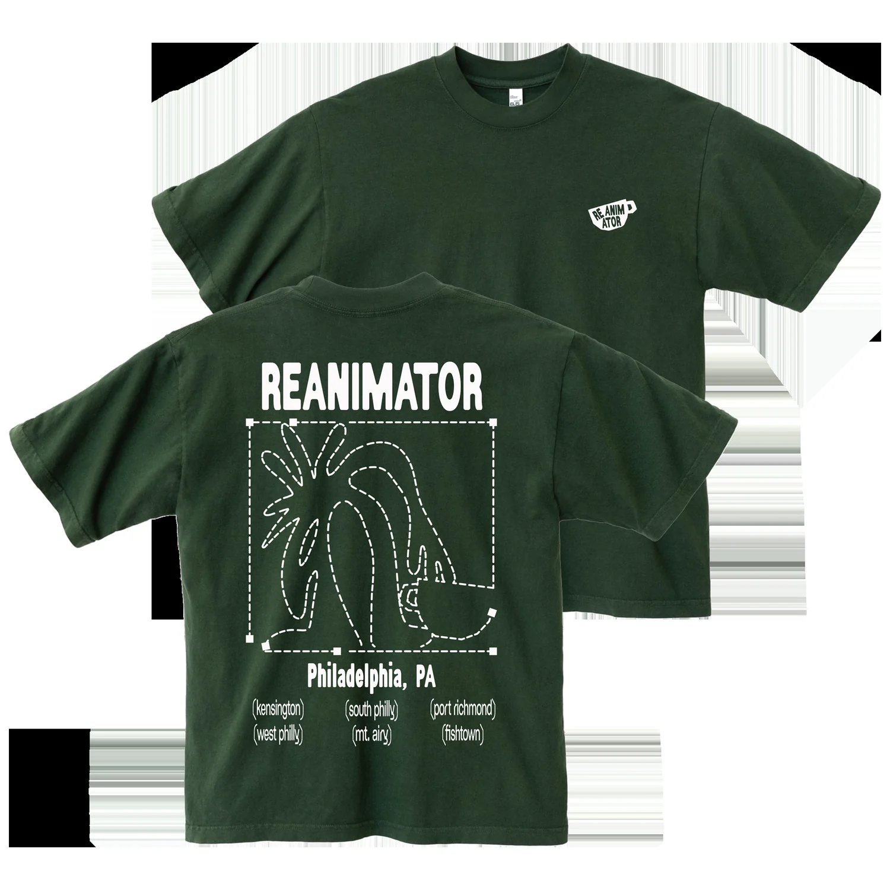
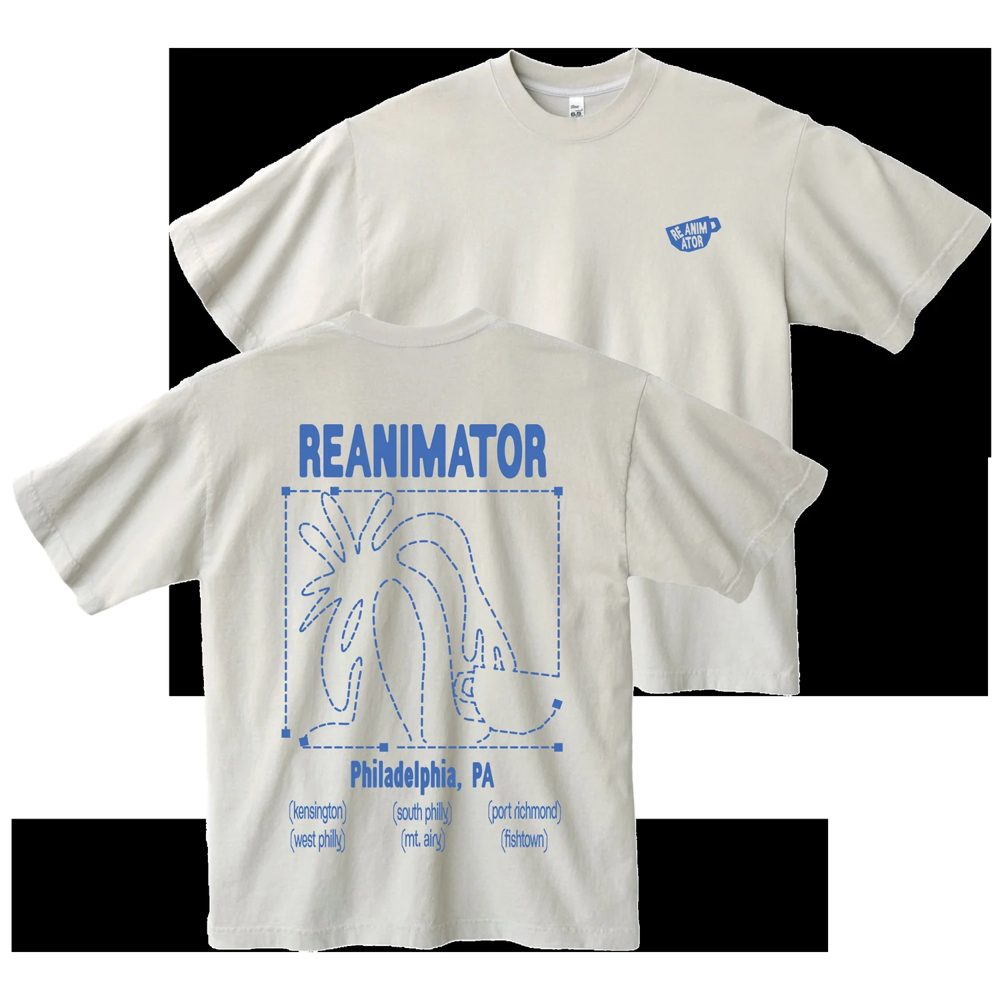
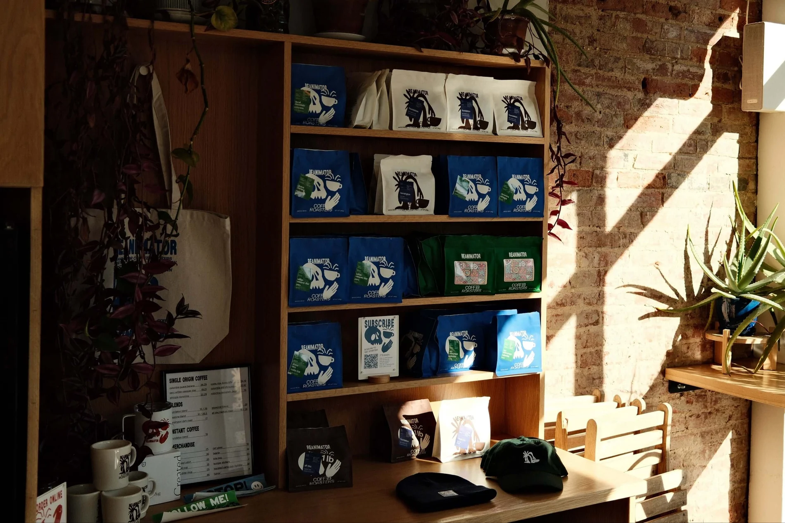
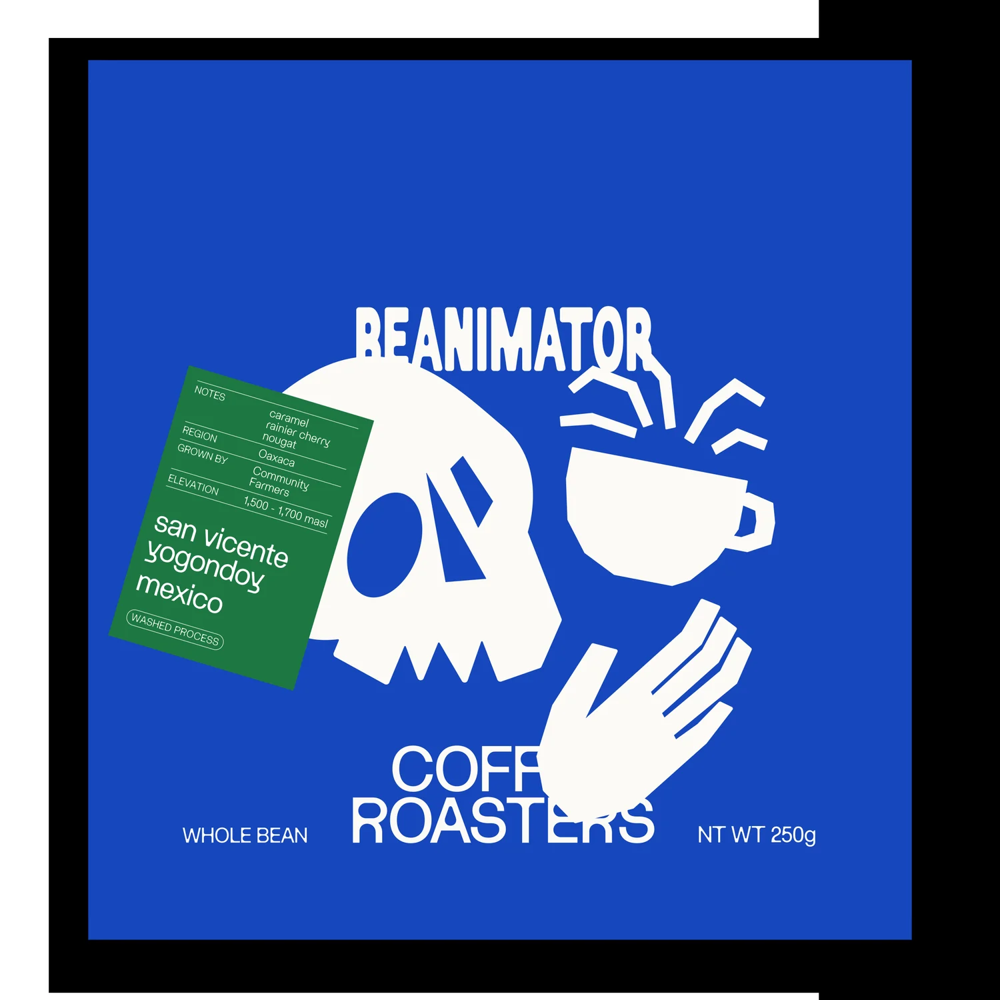
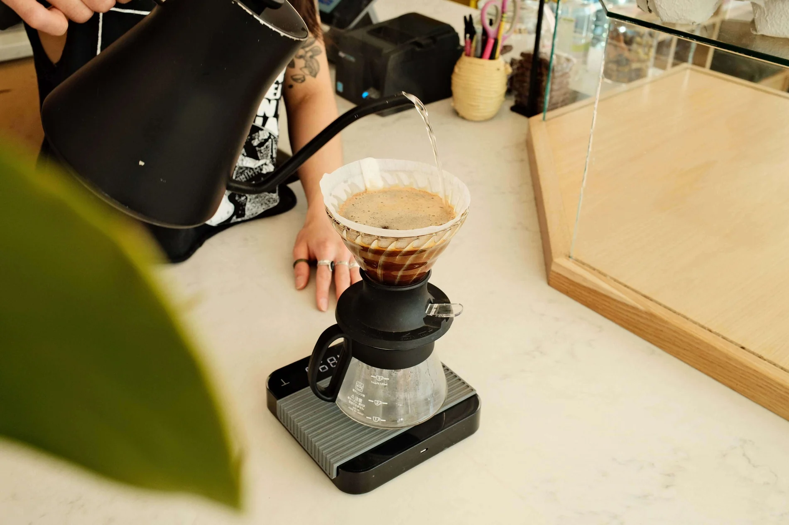
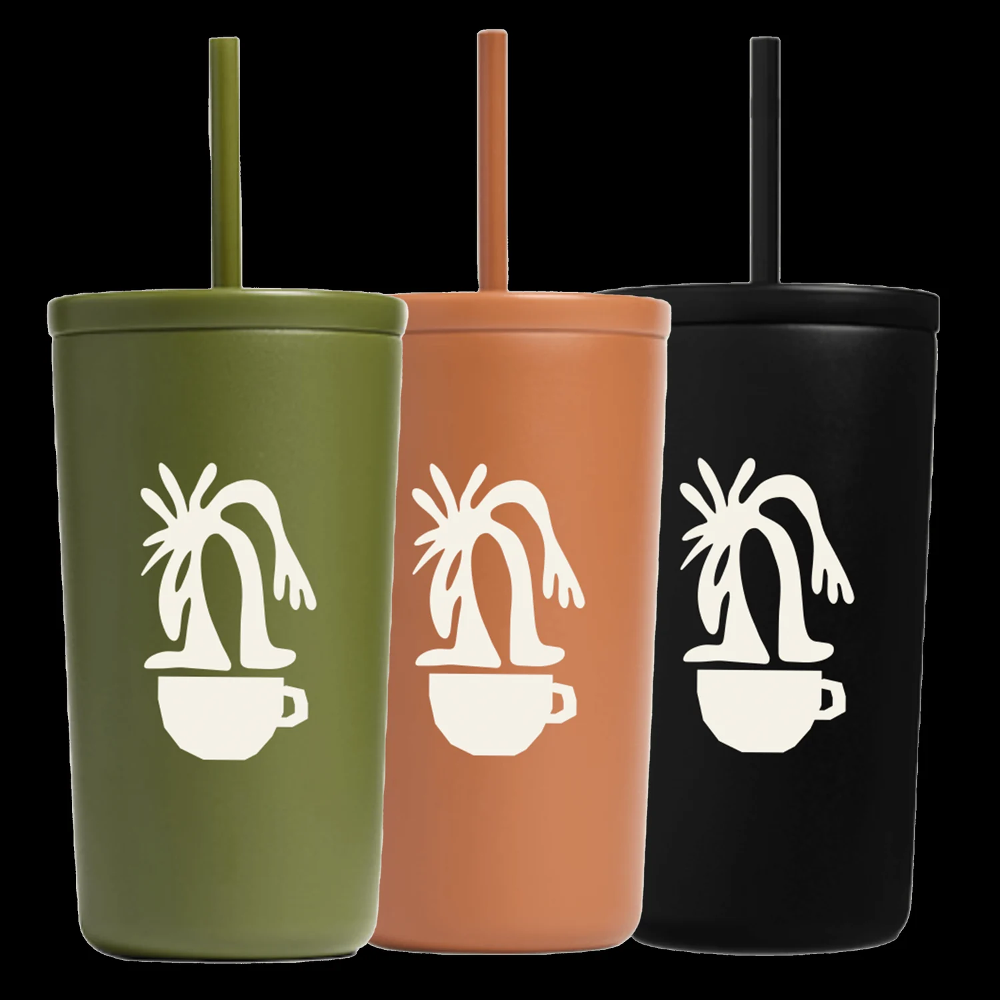
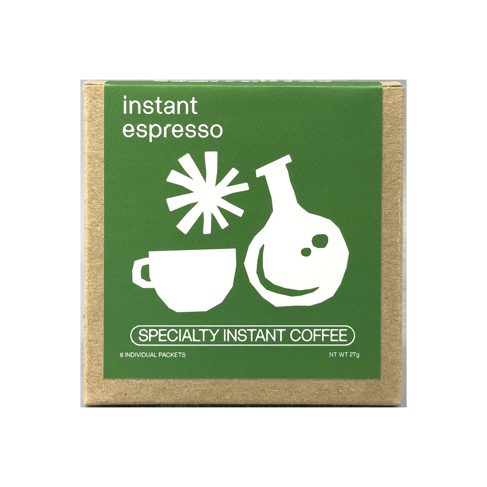
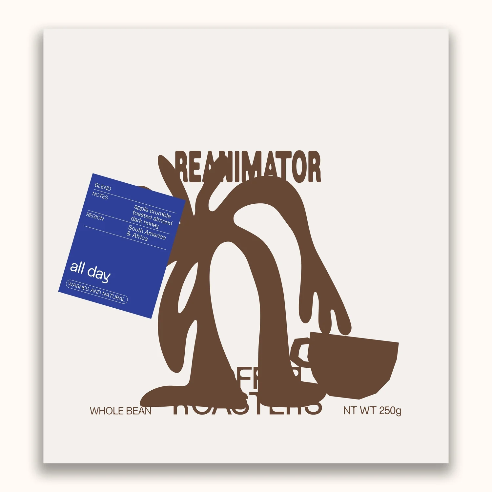

Philadelphia | Cafe
The Experience of Coffee
Specialty coffee shaped by curiosity, sourcing, roasting, tasting, and the connections coffee creates.

More ways into the experience.
Signature offerings, clearly framed.
Single-origin coffee, blends, instant coffee, subscriptions, gift subscriptions, and bulk subscriptions
Seasonal espresso drinks, single-origin coffee, tea, baked goods, and fresh retail bags at Philadelphia cafes
Wholesale coffee, training, space and buildout consultation, equipment support, and private-label blends and packaging
Drinkware, clothing, accessories, and coffee education
About Us
ReAnimator pursues coffee as a complete experience, from origin sourcing and partner cuppings to roasting, tasting, and conversations with customers. Curiosity and knowledge-sharing guide its work with producers, wholesale partners, and Philadelphia cafe guests.
ReAnimator's first cafe opened in Fishtown in 2013, where the company started

See what makes this place distinct.






Single-origin coffee, blends, instant coffee, subscriptions, gift subscriptions, and bulk subscriptions
Specialty coffee shaped by curiosity, sourcing, roasting, tasting, and the connections coffee creates.
Explore the official site
Shop All Coffee
The South Kensington cafe shares space with the roastery in a former elevator factory, where guests can watch coffee being roasted
Shop All CoffeeVisit and contact
Make the next visit easy.
Verified details and direct official links, together in one place.